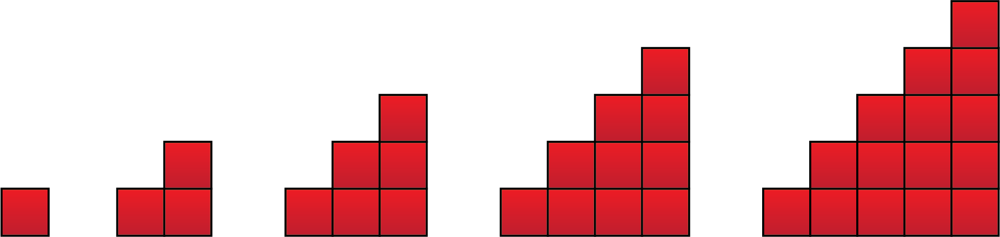

Regneregler
Du skal ha kompetanse om
- grunnleggende regning
- regning med potenser og r�tter
- regnerekkef�lge
- br�kregning
- grunnleggende Python-programmering
- utregninger
- variabler
- for- og while-l�kker
- funksjoner
- if-betingelser
Grunnleggende regning
Definisjon av potenser og r�tter
- Potens: Eksponenten forteller hvor mange ganger grunntallet skal multipliseres med seg selv.
- Kvadratrot: Det samme som opph�yde i en halv, som blir det positive tallet som ganger seg selv blir tallet i kvadratrota.
- \(n\)'te rot: Det samme som opph�yd i \(1/n\), som blir det tallet som ganger seg selv \(n\) ganger blir grunntallet.
Potensregneregler
Fra definisjonen over kan vi utlede f�lgende regler:| \(a^m \cdot a^n = a^{m+n}\) | \(a^0 = 1\) | \((a \cdot b)^n = a^n \cdot b^n\) | \((a^m)^n = a^{m \cdot n}\) |
| \(\dfrac{a^m}{a^n} = a^{m-n}\) | \(\dfrac{1}{a^n} = a^{-n}\) | \(\left(\dfrac{a}{b}\right)^n = \dfrac{a^n}{b^n}\) | \(\sqrt[n]{a} = a^{\frac{1}{n}}\) |
Eksempel
| \(3^2 \cdot 3^3 = 3^5\) | \(42^0 = 1\) | \((3 \cdot 2)^2 = 9 \cdot 4 = 36\) | \((3^2)^3 = 3^6\) |
| \(\dfrac{3^7}{3^2} = 3^5\) | \(3^{-2} = \dfrac{1}{9}\) | \(\left(\dfrac{2}{3}\right)^2 = \dfrac{4}{9}\) | \(\sqrt[3]{8} = 8^{\frac{1}{3}} = 2\) |
Regnerekkef�lge
- potenser
- multiplikasjon og divisjon (gange og dele)
- addisjon og subtraksjon (pluss og minus)
Hvert ledd skal regnes ut hver for seg, f�r de legges sammen.
Eksempel
\[ 5 - 2 \cdot 3^2 + 2 \cdot \left( 1 - 2^2 \right)^2 \]Regn ut uttrukket.


Eksempel
\[ 2 \cdot \left( 2^2 - 15 \right) \]Regn ut uttrukket p� to ulike m�ter.
Eksempel
Skriv \(\sqrt{75} + \sqrt{3}\) penere.
Br�kregler
Her er br�kreglene fra barneskolen:| \(\dfrac{a}{b} \cdot \dfrac{c}{d} = \dfrac{ac}{bd}\) | \(\dfrac{a}{b} : \dfrac{c}{d} = \dfrac{a}{b} \cdot \dfrac{d}{c}\) | \(\dfrac{a}{b} + \dfrac{c}{b} = \dfrac{a+c}{b}\) | \(\dfrac{a}{b} - \dfrac{c}{b} = \dfrac{a-c}{b}\) |
| \(\dfrac{a}{b} = \dfrac{ka}{kb}\) | \(\dfrac{ab}{ac} = \dfrac{b}{c}\) | \(\dfrac{a}{1} = a\) | \(\dfrac{0}{a} = 0\) |
Eksempel
| \(\dfrac{2}{3}\cdot\dfrac{4}{5}=\dfrac{8}{15}\) | \(\dfrac{2}{3}:\dfrac{4}{5}=\dfrac{2}{3}\cdot\dfrac{5}{4}=\dfrac{5}{6}\) | \(\dfrac{3}{7}+\dfrac{2}{7}=\dfrac{5}{7}\) | \(\dfrac{6}{11}-\dfrac{2}{11}=\dfrac{4}{11}\) |
| \(\dfrac{2}{3}=\dfrac{4}{6}\) | \(\dfrac{12}{18}=\dfrac{2}{3}\) | \(\dfrac{5}{1}=5\) | \(\dfrac{0}{8}=0\) |
Eksempel
\[ \frac{2}{3} + \frac{3}{5} = \frac{2 \cdot 5}{3 \cdot 5} + \frac{3 \cdot 3}{5 \cdot 3} = \frac{10}{15} + \frac{9}{15} = \frac{19}{15}\]Eksempel
\[ \frac{2}{3} + 5 = \frac{2}{3} + \frac{5}{1} =\frac{2}{3} + \frac{15}{3} = \frac{17}{3}\]Eksempel
\[ \frac{2}{3} \cdot 5 = \frac{2}{3} \cdot \frac{5}{1} =\frac{2\cdot 5}{3 \cdot 1} = \frac{10}{3}\]Eksempel
Skriv \(\frac{6 \cdot 10^3 - 6 \cdot 10^2}{2\cdot 10^{-1}}\) penere.
Det er lurt � beherske flere m�ter � regne det ut p�.
Eksempel
Skriv \(\frac{6 \cdot 10^3 - 6 \cdot 10^2}{2\cdot 10^{-1}}\) penere.
Bruk en annen fremgangsm�te enn i eksempelet over.
Grunnleggende Python-programmering
Python er et av de mest brukte programmeringsspr�kene. I tillegg ligner det p� de fleste andre vanlige programmeringsspr�kene, s� ved � l�re deg Python, blir det enkelt � l�re de andre spr�kene senere. Python brukes blant annet i deler av applikasjonene Instagram og Spotify. I tillegg er det veldig mye brukt p� matematikk- og fysikkstudier ved universiteter.
Det finnes ekstremt mange muligheter, og ekstremt mange kommandoer og kompliserte ting vi kan gj�re med Python. Vi ser her bare p� de aller viktigste, og enkleste tingene, som er det vi bruker p� videreg�ende (i 1P, 1T, R1, R2, Fysikk 1 og Fysikk 2, og litt i 2P).
Utregninger
print(2*3)
print(2**3)
print(2/3)
6, 8, 0,6666666Definere variabler
Vi kan definere variabler, som kan endre verdi:
a = 2 # Startverdi for a
b = 3
a = a + b # Ny verdi for a
print(a)
5I vanlig matematikk leser vi likhetstegnet som "er lik" ("er det samme som").
I programmeting leser vi likhetstegnet som "f�r verdien".
Matematikk: a = a + b betyr at b = 0
Python: a = a + b betyr at a f�r ny verdi: gammel a-verdi + b-verdien
for- og while-l�kker
Vi kan bruke l�kker i Python; Dette f�r programmet til � gjenta linjer flere ganger:
a = 2 # Startverdi for a
for n in range(1, 5): # for n-verdier fra og med 1 til 5 (til og med 4)
a = a + n # Ny verdi for a
print(a) # Skriver ut a-verdien
3, 5, 8, 12
a = 2 # Startverdi for a
n = 1 # Startverdi for n
while n < 5: # s� lenge n er mindre enn 5
a = a + n # Ny verdi for a
print(a) # Skriver ut a-verdien
n = n + 1 # n �ker med 1
3, 5, 8, 12Eksempel
Figuren illustrerer de fem f�rste trekanttallene; 1, 3, 6, 10, og 15.
Lag en algoritme du kan bruke for � finne summen av de 20 f�rste trekanttallene.
Lag et program basert p� algoritmen.
Den viktigste delen av l�sningen er � finne et m�nster vi kan bruke til algoritmen:
Hvert trekanttall er lik det forrige + figurnummeret:
\(T_1 = 1 \)
\(T_2 = T_1 + 2 \)
\(T_3 = T_2 + 3 \)
\(T_4 = T_3 + 4 \)
\( \vdots \)
I algoritemen m� vi ta summen av disse tallene:
- definere det f�rste trekanttallet \(T_1 = 1\)
- definere summen \(S_1 = 1\)
- gjenta f�lgende for n-verdier fra 2 til og med 20:
- �ke \(T_n\) med \(n\)
- �ke \(S_n\) med \(T_n\)
T = 1 # Startverdi trekanttall
S = 1 # Startverdi for summen
for n in range(2, 21): # for n-verdier fra 2 til og med 20
T = T + n
S = S + T
print(S)
1771
n = 1 # Startverdi for trekanttallnummeret
T = 1 # Startverdi trekanttall
S = 1 # Startverdi for summen
while n < 21: # s� lenge trekantallnummeret er mindre enn 21
n = n + 1
T = T + n
S = S + T
print(S)
Eksempel
Fibonacci-tallene er gitt ved \( 1, 1, 2, 3, 5, 8, 13, 21, ... \)Beskriv m�nsteret og lag et program som regner ut forholdet mellom et tall og det neste tallet i f�lgen. Gj�r dette for de 20 f�rste tallene.
a = 1 # Det f�rste tallet
b = 1 # Det neste tallet
for n in range(20): # Gjentar f�lgende 20 ganger:
print(a/b)
a = a + b # a f�r verdien etter b i f�lgen
b = a + b # b f�r verdien etter a i f�lgen
1.0
0.6666666666666666
0.625
0.6190476190476191
...
0.6180339887498951
0.6180339887498949Funksjoner
def f(x):
return ... # Funksjonsuttrykket
def f(x):
return x**2
print(f(1), f(2), f(3))
1, 4, 9if-betingelse
Vi kan lage programer med "if" (hvis), "elif" (ellers hvis) og "else" (ellers).
Eksempel
alder = 16 # skriv inn alderen din
if alder < 12:
print('Du er et barn')
elif alder > 18:
print('Du er voksen')
elif alder > 12:
print('Du er ten�ring')
else:
print('Du har skrevet en ugyldig verdi for alder')
Programmet sjekker om "alder" er mindre enn 12.
("alder" er ikke mindre enn 12, s� programmet g�r videre)
Programmet sjekker om "alder" er mer enn 18.
("alder" er ikke mer enn 18, s� programmet g�r videre)
Programmet sjekker om "alder" er mer enn 12.
Siden "alder" er mer enn 12, skriver programmet ut Du er ten�ring.
Eksempel
for x in range(-8, 9): # for x-verdier mellom -8 og 8
if 2*x + 4 == 0:
print(x)
Hvis \(2x+4=0\) skriver programmet ut \(x\)-verdien.
Siden \(2\cdot (-2) + 4 = 0\), skriver programmet ut \(-2\).
Sammendrag av Python-programmering
| Definere variabler | a = 2 # a f�r verdien 2 |
| Regneoperatorer | + - * ** / |
| Sammenligne og logikk | == != < > <= >= and or |
| if-test |
|
| Definere funksjon |
|
| for-l�kke |
|
| while-l�kke |
|